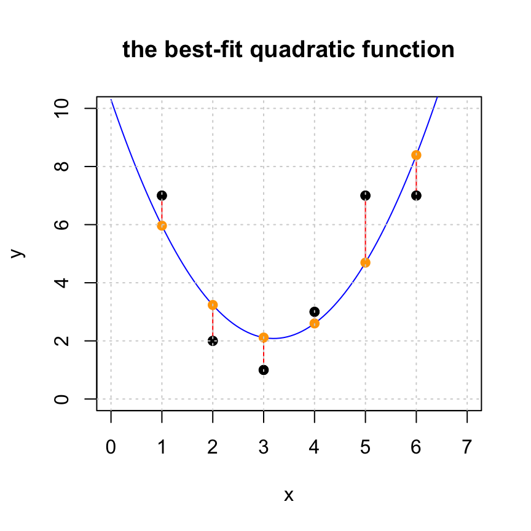

Section 8 Problem Set 8
Download the Rmd source file for this problem set.
Upload a completed, knitted .html version of this file on Moodle. If you have collaborated with others on this assignment (encouraged), please include their names here (no penalty).
8.1 Subspace Projection
Last week we learned how to project onto a subspace, but our method required that we have an orthogonal basis. Here we will see that our least-squares method allows us to project onto a subspace with any (not-necessarily-orthgoonal) basis. Consider the following subspace of \(\mathbb{R}^4\). We can turn it into a least-squares problem by making it the column space of a matrix \(A\). That is \(W = Col(A)\). \[ W = span\left\{ \begin{bmatrix} 1 \\ 2 \\ -1 \\ -2 \end{bmatrix}, \begin{bmatrix} 1 \\ 2 \\ 3 \\ 4 \end{bmatrix}, \begin{bmatrix} 1 \\ 0 \\ 1 \\ 0 \end{bmatrix} \right\}, \hskip.6in b = \begin{bmatrix} 9 \\ 5 \\ 5 \\ 8 \end{bmatrix}. \]
## [,1] [,2] [,3]
## [1,] 1 1 1
## [2,] 2 2 0
## [3,] -1 3 1
## [4,] -2 4 0Perform a matrix computation on A to show that the basis is not orthogonal.
Show that b is not in W.
Find the least-squares projection of b onto W. Find both \(\hat x\) and \(\hat b\).
Calculate the residual vector r, show that \(r \in W^\perp\), and find \(||r||\).
Consider the following derivation from the normal equations: \[ A^T A x = A^T b \qquad \Longrightarrow \qquad \hat x = (A^T A)^{-1} A^T b. \] The pseudoinverse is the matrix \[ A^+ = (A^T A)^{-1} A^T \] From what we see above it gives the least-squares solution to \(A x = b\). Compute the matrix \(A^+\), multiply it by \(b\), and show that you get \(\hat x\).
Continuing this story, \[ \hat b = A \hat x \qquad \Longrightarrow \qquad \hat b = A (A^T A)^{-1} A^T b. \] The projection matrix onto the subspace \(W\) is the matrix \[ P = A (A^T A)^{-1} A^T. \] Compute the matrix \(P\), apply it to \(b\), and see that you get the projected value \(\hat b\).
Compute \(P^2\) and compare it to \(P\). Explain why this happens.
Use it to project
b2 = c(1,2,3,4)onto \(W\).Find the eigenvalues of \(P\). They are nice. Explain (briefly) where the eigenvectors of this matrix are in relation to \(W\).
8.2 Least-Squares Polynomials
Here is the problem that we discussed in class with a quadratic fit to it. Make a cubic, quartic, and quintic fit to this data. Turn in a plot of each. Comupute the length of the residual in each case. Which do you think is the best model of the data?
## x
## [1,] 1 1 1
## [2,] 1 2 4
## [3,] 1 3 9
## [4,] 1 4 16
## [5,] 1 5 25
## [6,] 1 6 36## [,1]
## [1,] 11.26429
8.3 Fuel Efficiency
Below is a classic data set of fuel efficiency in 38 different automobiles.
## lbs HP Cyl MPG
## BuickEstateWagon 3967.60 155 8 16.9
## FordCountrySquireWagon 3689.14 142 8 15.5
## ChevyMalibuWagon 3280.55 125 8 19.2
## ChryslerLeBaronWagon 3585.40 150 8 18.5
## Chevette 1961.05 68 4 30.0
## ToyotaCorona 2329.60 95 4 27.5
## Datsun510 2093.00 97 4 27.2
## DodgeOmni 2029.30 75 4 30.9
## Audi5000 2575.30 103 5 20.3
## Volvo240GL 2857.40 125 6 17.0
## Saab99GLE 2543.45 115 4 21.6
## Peugeot694SL 3103.10 133 6 16.2
## BuickCenturySpecial 3075.80 105 6 20.6
## MercuryZephyr 2793.70 85 6 20.8
## DodgeAspen 3294.20 110 6 18.6
## AMCConcordD/L 3103.10 120 6 18.1
## ChevyCapriceClassic 3494.40 130 8 17.0
## FordLTD 3389.75 129 8 17.6
## MercuryGrandMarquis 3599.05 138 8 16.5
## DodgeStRegis 3485.30 135 8 18.2
## FordMustang4 2352.35 88 4 26.5
## FordMustangGhia 2648.10 109 6 21.9
## MazdaGLC 1797.25 65 4 34.1
## DodgeColt 1742.65 80 4 35.1
## AMCSpirit 2429.70 80 4 27.4
## VWScirocco 1810.90 71 4 31.5
## HondaAccordLX 1942.85 68 4 29.5
## BuickSkylark 2429.70 90 4 28.4
## ChevyCitation 2361.45 115 6 28.8
## OldsOmega 2457.00 115 6 26.8
## PontiacPhoenix 2325.96 90 4 33.5
## PlymouthHorizon 2002.00 70 4 34.2
## Datsun210 1838.20 65 4 31.8
## FiatStrada 1938.30 69 4 37.3
## VWDasher 1992.90 78 4 30.5
## Datsun810 2561.65 97 6 22.0
## BMW320i 2366.00 110 4 21.5
## VWRabbit 1925.00 71 4 31.9- Fit a linear model of the form \[ mpg = a_0 + a_1 lbs + a_2 HP + a_3 Cyl. \] Find the coefficients \(a_0,a_1,a_2,a_3\) and the length of the residual. If you have taken Stat 155, you can see that we are doing the exact same thing by comparing your results with
##
## Call:
## lm(formula = MPG ~ lbs + HP + Cyl)
##
## Residuals:
## Min 1Q Median 3Q Max
## -4.4669 -1.6011 -0.3246 1.0759 6.6231
##
## Coefficients:
## Estimate Std. Error t value Pr(>|t|)
## (Intercept) 49.644579 1.992433 24.917 < 2e-16 ***
## lbs -0.008288 0.002316 -3.579 0.00106 **
## HP -0.073961 0.043862 -1.686 0.10091
## Cyl 0.791590 0.730326 1.084 0.28604
## ---
## Signif. codes: 0 '***' 0.001 '**' 0.01 '*' 0.05 '.' 0.1 ' ' 1
##
## Residual standard error: 2.791 on 34 degrees of freedom
## Multiple R-squared: 0.833, Adjusted R-squared: 0.8183
## F-statistic: 56.55 on 3 and 34 DF, p-value: 2.656e-13Add the cars weight in tons to your model and solve \(mpg = a_0 + a_1 (lbs) + a_2 (HP) + a_3 (Cyl) + a_4 (tons).\) Compare the coefficients you get with those that you got in part a. Give a short explanation of what you see using some of the linear algebra language that we have learned in the course.
The residual vector \(\mathsf{r}\) measures the quality of fit of our model. But how do we turn this into a meaningful quantity? One method is to look at the coefficient of determination, which is more commonly refered to as the “\(R^2\) value.”
You can see the \(R^2\) value of your fit in part (a) under the “Multiple R-squared†output in the linear model summary above.
If \(\mathsf{y} = [ y_1, y_2, \ldots, y_n ]^{\top}\) is our target vector with least-squares solution \(\hat{\mathsf{y}} = A \hat{\mathsf{x}}\) and residual vector is \(\mathsf{r} = \mathsf{y} - \hat{\mathsf{y}}\). Let \[ a = \frac{1}{n} ( y_1 + y_2 + \cdots + y_n) \] be the average or mean of the entries of target vector \(\mathsf{y}\) and let \(\mathsf{y}^* = [a, a, \ldots, a]\). (We call this vector “y star”, so
ystarwould be a fine name in R.) The \(R^2\) value is \[ R^2 = 1 - \frac{\| \mathsf{y} - \hat{\mathsf{y}} \|^2 }{\| \mathsf{y} - \mathsf{y}^* \|^2} = 1 - \frac{\| \mathsf{r} \|^2}{\| \mathsf{y} - \mathsf{y}^* \|^2}. \]The \(R^2\) value is a number in \([0,1]\). The squared-length \(|| \mathsf{y} -\mathsf{y}^*||^2\) is the total variance: that is, how much the data varies from the mean, and \(\frac{\| \mathsf{r} \|^2}{\| \mathsf{y} - \mathsf{y}^* \|^2}\) tells us the fraction of the total variance that is explained by our model. Thus, if \(R^2\) is near 1, then our model does a good job at “explaining†the behavior of \(\mathsf{y}\) via a linear combination of the columns of \(A\).
To do: Find the \(R^2\) value for our least squares solution to the cars data in part (a). Here are some helpful functions: +
mean(vec)returns the mean (average) of the entries of the vectorvec+rep(a, n)creates a constant vector of length \(n\) where every entry is \(a\). +Norm(vec)from thepracmapackage returns the magnitude (Euclidean length) of the vectorvec. To learn more, you should take STAT 155: Introduction to Statistical Modeling.
8.4 Fourier Analysis
In Fourier analysis one uses trigonometric functions to model oscillatory behavior in data. These methods have important applications in the study of sound or video signals, financial data, medicine, and engineering (to mention just a few). For example, consider the following set of 200 data points.

A first Fourier approximation would fit a model of the form \[ f_1(t) = c_0 + c_1 \sin(t) + c_2 \cos(t). \] Thus, we make the following matrix (we show here only the first 10 rows; there are 200 rows).
## [,1] [,2] [,3]
## [1,] 1 0.00000000 1.0000000
## [2,] 1 0.09983342 0.9950042
## [3,] 1 0.19866933 0.9800666
## [4,] 1 0.29552021 0.9553365
## [5,] 1 0.38941834 0.9210610
## [6,] 1 0.47942554 0.8775826
## [7,] 1 0.56464247 0.8253356
## [8,] 1 0.64421769 0.7648422
## [9,] 1 0.71735609 0.6967067
## [10,] 1 0.78332691 0.6216100Now we solve the normal equations
## [,1]
## [1,] 3.9971143
## [2,] 1.0207277
## [3,] -0.4486618and plot the solution
 Your task:
Your task:
- Update this to add the second Fourier coefficient terms by fitting the following function to the data. Plot your result. \[ f_2(t) = c_0 + c_1 \sin(t) + c_2 \cos(t) + c_3 \sin(2t) + c_4 \cos(2t) \]
- Compute the length of the residul vector for both the \(f_1(t)\) and the \(f_2(t)\) model. Which approximation looks better visually. That is, does the second approximation capture more of the shape of the data, or do you think that the first is a better model?
8.5 Global Fossil Fuel Emissions
Below is a plot of global fossil fuel emmissions between 1751 and 1998 measured in megatons of carbon.
year=c(1751:1998)
emissions = c(3, 3, 3, 3, 3, 3, 3, 3, 3, 3, 3, 3, 3, 3, 3, 3, 3, 3, 3, 3, 4, 4, 4, 4, 4, 4, 4, 4, 4, 4, 5, 5, 5, 5, 5, 5, 5, 5, 5, 5, 6, 6, 6, 6, 6, 6, 7, 7, 7, 8, 8, 10, 9, 9, 9, 10, 10, 10, 10, 10, 11, 11, 11, 11, 12, 13, 14, 14, 14, 14, 14, 15, 16, 16, 17, 17, 18, 18, 18, 24, 23, 23, 24, 24, 25, 29, 29, 30, 31, 33, 34, 36, 37, 39, 43, 43, 46, 47, 50, 54, 54, 57, 59, 69, 71, 76, 77, 78, 83, 91, 95, 97, 104, 112, 119, 122, 130, 135,
142, 147, 156, 173, 184, 174, 188, 191, 194, 196, 210, 236, 243, 256, 272, 275, 277, 281, 295, 327, 327, 356, 372, 374, 370, 383, 406, 419, 440, 465, 507, 534, 552, 566, 617, 624, 663, 707, 784, 750, 785, 819, 836, 879, 943, 850, 838, 901, 955, 936, 806, 932, 803, 845, 970, 963, 975, 983, 1062, 1065, 1145, 1053, 940, 847, 893, 973, 1027, 1130, 1209, 1142, 1192, 1299, 1334, 1342, 1391, 1383, 1160, 1238, 1392, 1469, 1419, 1630, 1767, 1795, 1841, 1865, 2043, 2177, 2270, 2330, 2463, 2578, 2595, 2701, 2848, 3009, 3146, 3306, 3412, 3588, 3802, 4075, 4227, 4394, 4633, 4641, 4613, 4879, 5018, 5078, 5368, 5297, 5125, 5080, 5067, 5241, 5405, 5573, 5701, 5926, 6035, 6096, 6186, 6089, 6090, 6236, 6378, 6530, 6628, 6608)
plot(year,emissions,pch=20,cex=.7,col="red")
The data suggest that the fossil fuel emissions \(f\) follow an exponential model with respect to the year \(y\): \[f = a e^{k(y-1750)},\] where \(a\) and \(k\) are the unknown constants. This model is not linear in the unknowns \(a\) and \(k\), but (this is a great idea!) it becomes linear if we take the logarithm of both sides. Doing so yields the following linear system: \[\log(f)=\log(a)+k(y-1750).\]
- Note: This process works for any logarithm, but it is common to use the natural logarithm (use
log()in R). - Note: To simplify even further, we will define
time=year-1750so that time represents years after 1750.
This results in the model
\[ \log(f)=d+kt,\] where \(d=\log(a)\) and \(t\) is time (since 1750),
Your task: Use least-squares projection to find the best fitting exponential function for this data. This will give you the values for \(d\) and \(k\), and once you know \(d\), you can find \(a = \exp(d)\). We have started the code for you by defining x=year-1750 and y=log(emissions).
### your code goes here.
# be sure to define d and k and A
t=year-1750
y=log(emissions)
A=cbind(1) # this isn't right, yet!
d=1
k=0
#####
# your code above has found b and k
(a = exp(d))## [1] 2.718282## [1] 0Run the code below to plot the original data along with your exponential model curve \(f(t)\). Note: This code assumes that you have already defined the values for k and a. Otherwise, it will not work!
f=function(y){a * exp(k*(y-1750))}
plot(year,f(year),type="l",lwd=3,ylim=c(0,10000),ylab="emissions", main="best fit exponential function")
points(year,emissions,pch=20,cex=.7,col="red")